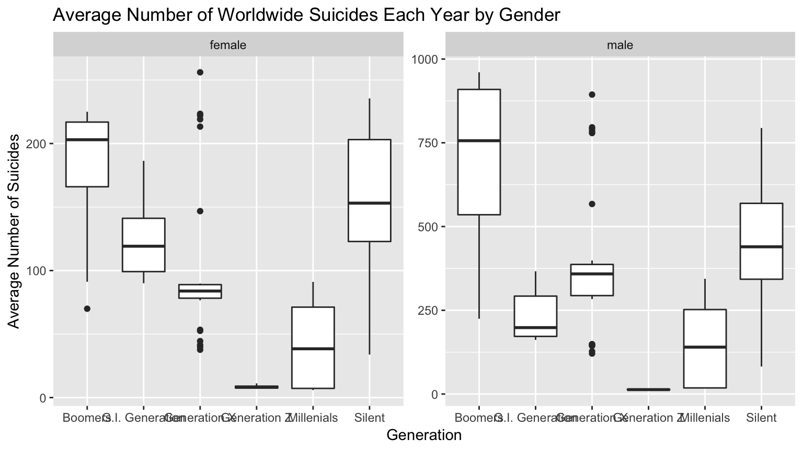

Here we try to look at differnt factors that can affect suicides across the world and we try to invistigate if there is a general pattern in both genders. We are suprised by what we found; however, we are left with even more, better questions on weather there are othe factors to consider in order to limit suicides victims. First, look at the the suicides numbers over the years, then we add the factor of the GDP of a country, and at last we take a specific look at the generations those vicitms belong to.
We also wish to note that we gathered this data from the international World Health Organization (WHO) Mortality Database, which catalogues causes of death over the globe and provided the necessary resources for this project1]. In turn WHO gathers their information from national civil registration systems across the globe.2
Displayed in the graphs below are the trends of suicides throughout the world, by year and by generation. In the first graph, shown below, until around the 1990s, suicides were at a steady low. However, between a few years prior to 1990 and approximately 2014, the trends of suicides did remain steady from generation to generation. Furthermore, after 2014, there was yet another leap as there had been previously. Female suicides, in general, stick further to a steady pattern, throughout all generations, while male suicides do not remain as predictable. There was a massive leap in approximately 1994 for males, specifically those in the age range of 35-54, easily overwhelming even the leap shown with 2014. Young adult males and older adult males, 18-34 and 55-74 respectively, are also variable in their patterns, while with youth and with seniors, the trendline is much steadier over the years.
When looking at the graph of GDP per Capita versus Suicide Number by Gender, there is a small, but noticeable difference. As the GDP shows to improve, there seems to be a slightly higher prevalence of female suicides, while the inverse is true for males. When the GDP improves, the amounts of male suicides drop down slightly. Men are most likely to commit suicide in times when the GDP is low. Meanwhile, there seems to be a correlation between the trend of suicide of women as the GDP increases, regardless of country. This could be due to social causes, such as the prevalence of domestic abuse worldwide: in times of economic growth, abusers may become more confident and lash out. This is only one possible reason why female suicide rates seem to increase in times of economic prosperity.
Overall, there are high amounts of suicide in areas with low GDPs, all over the globe, while in contrast it seems suicide rates are lower in areas in which the GDP per Capita is higher.
In the next graph, we analyze the mean amounts of suicides by combining the data from 2000, 2010, and 2015. The scales of the two facets are different, given the much higher occurrence of male suicide across generations. While at first occurence it may seem like women in Generation Z have a higher range across these years, that is not the case due to the changed scale. In women, the range of suicides is most prevalent in the Silent generation, whilst with men, the widest range occurs with the generation of Baby Boomers. This could possibly be due to the ill social consequences that come with aging and how that affects one’s self image.

Overall, it appears that suicide occurs more often in males than females, and in those around middle-age, this could be due to the stigma that follows mental health disorders; how especially men internalize unhealthy thoughts; and the stigmas of aging for those that are middle-age.Also, the socioeconomic status of the country may play a role in the number of suicides a country has as a weaker economy may limit people‘s access to mental health services, barring them from gaining the help that they need. Moreover, the generations a person is born in, with all its mishaps, can affect the the culture and in turn the kind of standers people have, and we see that in the raise of the average in the baby boomer genration after the second WOrld War.
Though this dataset does not take into account the total number of unsuccessful suicide attempts there are worldwide. In further research as to why men greatly outnumber women in suicides, we put more research into the methods of how men and women, respectively, attempted committing suicide. In that retrospect, we found a study from the US National Library of Medicine – National Institutes of Health which detailed how women were more likely to attempt suicide with pharmacological drug abuse and exsanguination, while men were more likely to attempt hanging themselves of asphyxiating themselves.3 In conclusion, we found that men more often had successful suicide attempts while women were more likely to survive their suicide attempts, as men primarily chose more violent methods as to end their lives. So, we recommend to investigate the role of abuse, domestic violence, and national violence even further.
“WHO Mortality Database.” World Health Organization. World Health Organization, n.d. Web. 20 Dec. 2018.↩
“WHO Suicide Statistics.” Szamil. Kaggle, n.d. Web. 2 Dec. 2018..↩
“Gender differentiation in methods of suicide attempts.” Tsirigotis Konstantinos, Tsirigotis Marta, Gruzczynski Wojciech. NCBI. 1 Aug. 2011. Web. 20 Dec. 2018.↩